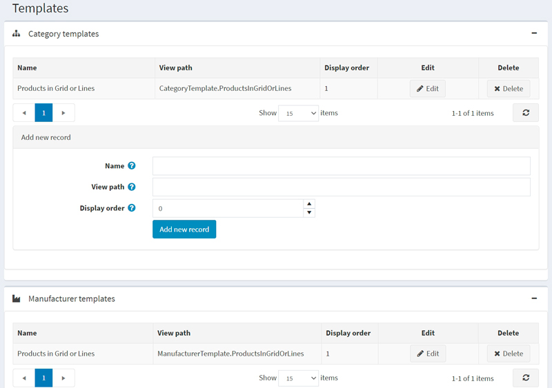
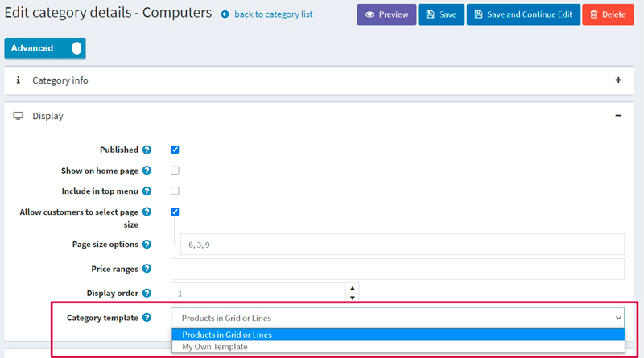
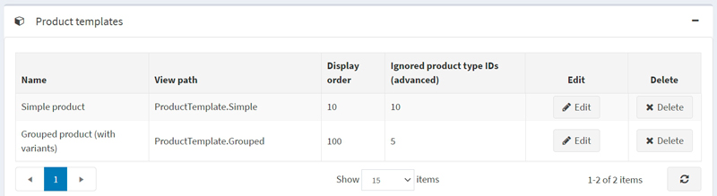
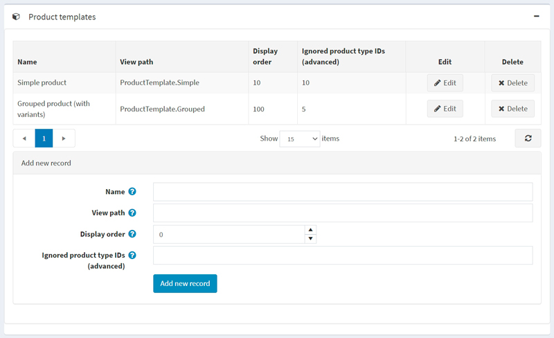
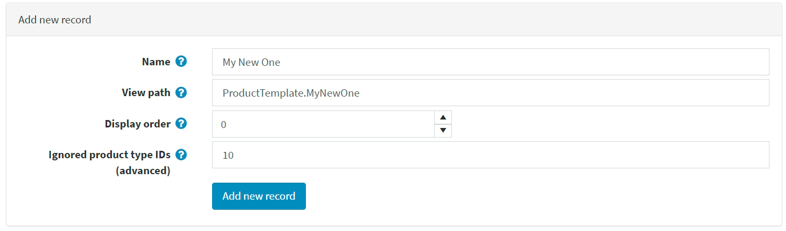
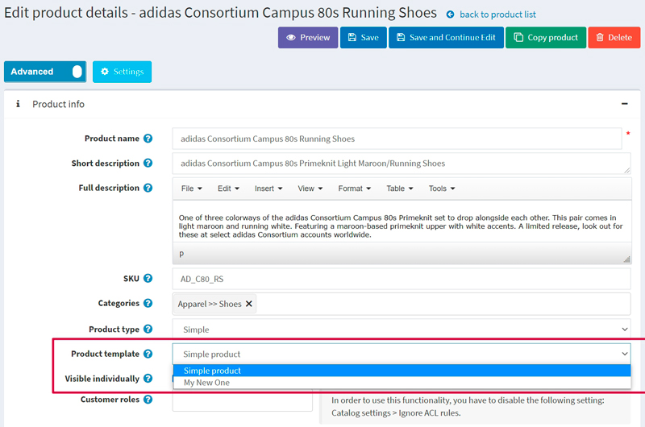

範本
在 nopCommerce 中，您可以為類別、製造商、商品以及內容頁面指定替代的佈局範本。您可以在 系統 → 範本 頁面上查看現有範本的清單：

系統預設包含一個類別範本、一個製造商範本、一個內容頁面範本以及兩個商品範本。
管理後台中的每個類別、製造商、商品以及內容頁面詳細資訊頁面，都允許您在編輯實體時選擇範本。例如：

Note
只有當您為類別、製造商或內容頁面建立多於一個範本時，才會看到範本的下拉式選單。
Note
由於我們有兩種商品類型：簡單商品 (Simple) 和 分組商品 (Grouped (product with variants))，因此系統預設會建立兩個相應的商品範本：

因此，若要在商品詳細資訊頁面上看到範本下拉式選單，您需要建立兩個符合所選商品類型的商品範本。請參閱下方關於如何執行此操作的說明。
新增範本
讓我們以商品範本為例，看看如何建立一個範本。假設您要為「簡單 (Simple)」商品類型建立一個範本。
首先，您需要建立一個合適的範本檔案。如果您已經將檔案放置在正確的資料夾中，請跳過此步驟。
- 前往
Views\Product資料夾。 - 複製
ProductTemplate.Simple.cshtml檔案並重新命名。例如，命名為ProductTemplate.MyNewOne.cshtml。 - 修改
ProductTemplate.MyNewOne.cshtml檔案的程式碼以符合您的需求。
- 前往
前往 系統 → 範本 頁面並進入 商品範本 (Product templates) 面板：

在 新增記錄 (Add new record) 區塊中，填寫以下表單：
- 輸入範本的 名稱 (Name)。以本案例來說，名稱為
My New One。 - 輸入 檢視路徑 (View path)。以本案例來說，路徑為
ProductTemplate.MyNewOne。 - 輸入此範本的 顯示順序 (Display order)。1 代表列表的最上方。
- 僅適用於商品範本。其他範本不適用： 輸入 忽略的商品類型 ID (進階) (Ignored product type IDs (advanced))。系統預設有兩種商品類型及其對應的 ID：簡單 (Simple) (ID 5) 和 分組 (Grouped) (ID 10)。由於我們正在為「簡單」商品類型建立範本，我們應該忽略 ID 為 10 的「分組」商品類型。
表單看起來會像這樣：

- 輸入範本的 名稱 (Name)。以本案例來說，名稱為
點擊 新增記錄 (Add new record) 按鈕以儲存新範本。
儲存新範本後，您將會在商品詳細資訊頁面上看到它，現在您可以從兩個商品範本中進行選擇：

Note
使用 忽略的商品類型 ID (進階) (Ignored product type IDs (advanced)) 欄位來限制商品範本並非必要。如果您將此欄位留空，該商品範本將可用於所有類型的商品。